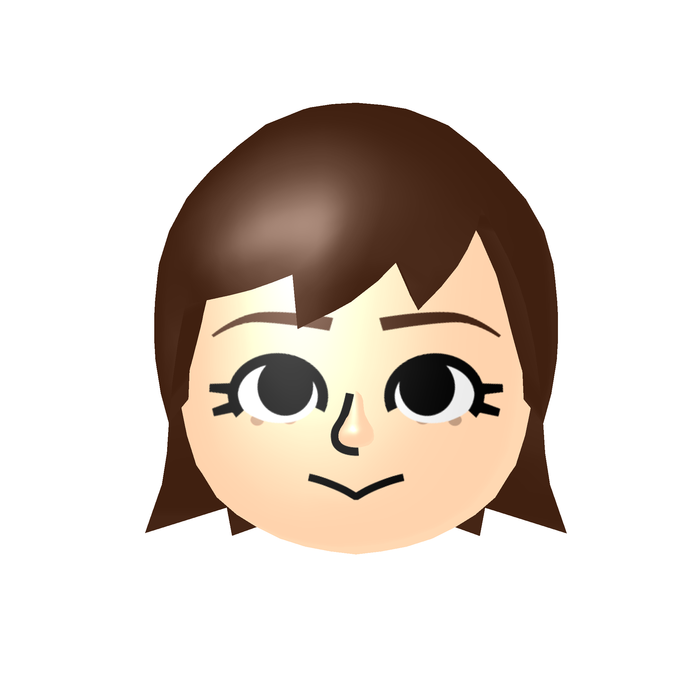

Deze website gebruikt cookies, deze komen van: De digitaal tuintje webring - dit zorgt dat je vanaf deze site naar een site kan van een andere student. Spotify - Dit zorgt dat je vier door mij gekozen nummers af kan spelen in de site. LocalHost - In local host worden door jou gemaakte keuzes opgeslagen zoals of je al een keuze hebt gemaakt voor deze melding en of je light of darkmode wil gebruiken. Als je het goed vind dat de site deze cookies gebruikt kan je dat hieronder aanvinken, je kan deze keuze altijd later veranderen door op de 🍪 knop te drukken in de applet-balk.